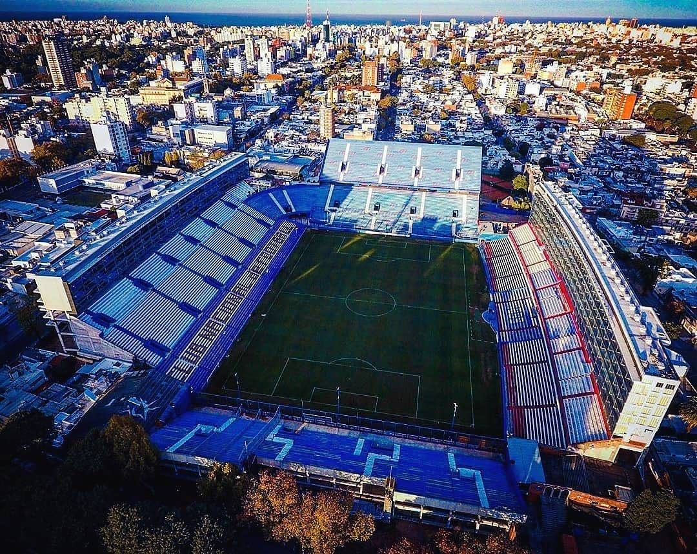

FUNDACIÓN
El 14 de mayo de 1899, se reunieron en la casa de Ernesto Caprario,
22 jóvenes de entre 13 y 20 años, para fundar el Club Nacional de Football,
primer Club criollo de América y decano del fútbol uruguayo.
En la sesión fundacional se establecieron las bases del Club, el nombre de la Institución y la indumentaria.
Además, fueron electos Sebastián Puppo como Presidente y Domingo Prat como Capitán.
LA BANDERA

El 23 de mayo de 1902 se creó la bandera social de la Institución.
En la sesión de Directiva del 16 de mayo de 1902, el Vicepresidente Sr. Jorge Ballestero, había propuesto dotar al Club de una bandera social.
En la siguiente sesión del día 23 de mayo, el Secretario Domingo Prat sugirió los colores azul, blanco y rojo punzó y Ernesto Caprario presentó un croquis,
de una bandera de color azul, con una franja blanca cruzada y la inscripción en letras rojas “C. N. de F”, el cual fue aprobado por unanimidad.
Finalmente, el 30 de junio, el Sr. Carlos Davie, Gerente de la Sociedad Comercial de Montevideo, donó 10 pesos para que Nacional pudiera confeccionar la primera bandera del Club.
Como gesto de agradecimiento, la Directiva nombró al Sr. Carlos Davie como Socio Honorario de la Institución.
EL GRAN PARQUE CENTRAL
El Gran Parque Central es el Primer Estadio de la Copa del Mundo. Es propiedad del Club Nacional de Football y se ubica en el barrio La Blanqueada de Montevideo, Uruguay. Construido en 1900, es el estadio más antiguo de América y el decimosexto de todo el mundo. Es donde Nacional juega sus partidos de local y acrecienta su mística ganadora.
CAPACIDAD
34.000
Espectadores
DIMENSIONES
105 x 68
Metros
APERTURA
1900
25 de Mayo
IDOLOS Y LEYENDAS
Abdón Porte
 Uno de los jugadores más emblemáticos de la historia del Club.
Llegó a Nacional en 1911 procedente de Libertad FC y rápidamente
se transformó en el líder espiritual del equipo que arrasó con todos los títulos en la década del 10’.
Uno de los jugadores más emblemáticos de la historia del Club.
Llegó a Nacional en 1911 procedente de Libertad FC y rápidamente
se transformó en el líder espiritual del equipo que arrasó con todos los títulos en la década del 10’.
Alfredo Foglino
 Fue el primer “Mariscal” del fútbol uruguayo.
Llegó a Nacional en 1911 procedente de Libertad FC y en 1915 se transformó en el Capitán del equipo.
Fue el primer “Mariscal” del fútbol uruguayo.
Llegó a Nacional en 1911 procedente de Libertad FC y en 1915 se transformó en el Capitán del equipo.
Álvaro "Chino" Recoba
 El último genio. Uno de los jugadores más talentosos de la historia de nuestro fútbol.
Computando sus dos etapas en Nacional, jugó 176 partidos, anotó 61 goles y
ganó 2 Campeonatos Uruguayos (2011/12 y 2014/15).
El último genio. Uno de los jugadores más talentosos de la historia de nuestro fútbol.
Computando sus dos etapas en Nacional, jugó 176 partidos, anotó 61 goles y
ganó 2 Campeonatos Uruguayos (2011/12 y 2014/15).
Luis Suárez volvió

Diecisiete años después de su debut, el astro uruguayo Luis Suárez volvió a jugar este martes con Nacional de Montevideo al ingresar al minuto 74 del partido ante el brasileño Atlético Goianiense por la ida de los cuartos de final de la Copa Sudamericana 2022.
El Pistolero, de 35 años, saltó al césped del estadio Gran Parque Central en Montevideo, casa del Bolso,en medio de una monumental ovación de al menos 30.000 espectadores para sustituir a Franco Fagúndez cuando Nacional perdía 1-0 con Goianiense.
Máximo goleador histórico de la selección de Uruguay con 68 anotaciones, Suárez firmó el domingo un contrato hasta finales de año con la intención de tener continuidad de cara al Mundial de Catar-2022 (21 de noviembre-18 diciembre), el cuarto que disputará desde Sudáfrica-2010.
El club uruguayo le garantiza la titularidad en al menos 16 encuentros, entre Copa Sudamericana y los campeonatos locales durante los 100 días previos al Mundial, en un contrato corto que difícilmente otro equipo hubiera aceptado.